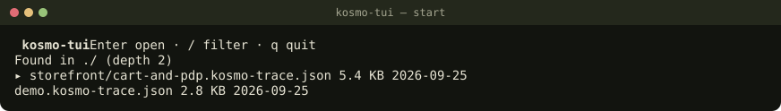
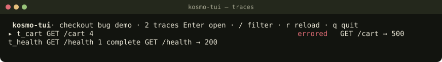
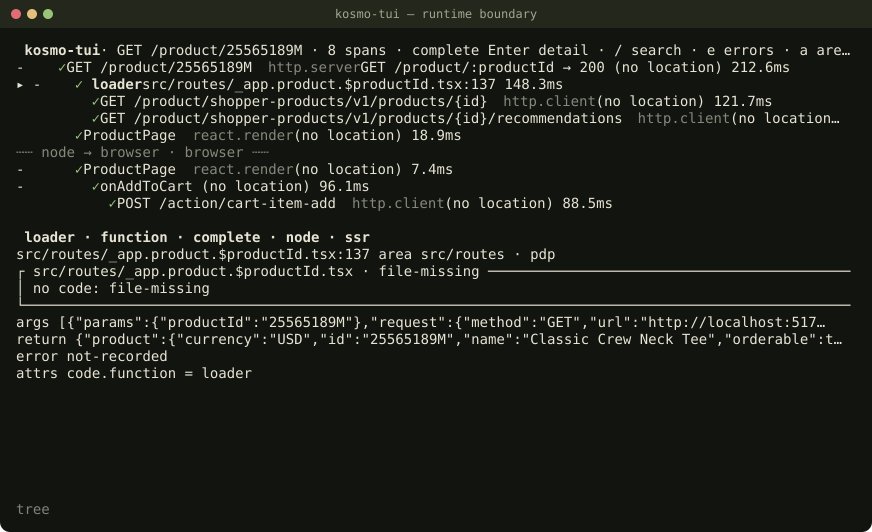
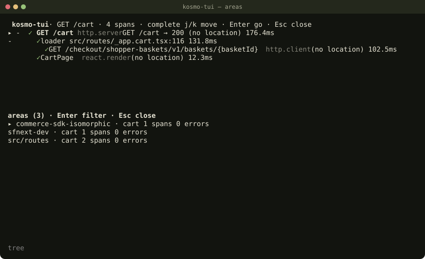

Запуск у своєму проєкті, типові розбори і команди, які нічого не відкриють.
Node >= 22.13.0. Окремої інсталяції не треба:
npx @ivlad003/kosmo-tui
npx @ivlad003/kosmo-tui ./trace.kosmo-trace.json
npx @ivlad003/kosmo-tui ./trace.kosmo-trace.ndjson
npx @ivlad003/kosmo-tui ./trace.kosmo-trace.sqlite
Без аргументів відкривається стартовий екран: файли *.kosmo-trace.json|ndjson|sqlite у поточній
директорії і на два рівні нижче (без node_modules, .git і прихованих директорій), плюс
до 20 недавніх шляхів з ~/.config/kosmo-tui/recent.json. Файл відкривається тільки після Enter.
-r не пише recent.json. --print теж. Якщо домашня директорія не
визначається і XDG_CONFIG_HOME не задано, список недавніх вимкнений.

Запускайте з кореня проєкту, де лежать package.json або .git і сам вихідний код.
cd ~/work/shop
npx @ivlad003/kosmo-tui ./traces/checkout.kosmo-trace.jsonj/k і Enter відкривають потрібний. Один трейс відкривається
одразу.
j/k ходять по дереву. e лишає тільки помилки.args, return, error.
▶ — це рядок із траси. Якщо файл на диску змінився, вікно скаже
changed-since-trace або moved to line N.
Корінь коду береться так: --root або :root, якщо ви їх дали; інакше
dataset.root, якщо це абсолютний шлях, який містить поточну директорію або директорію файла траси;
інакше найближчий .git / package.json над файлом траси; інакше поточна директорія.
Автоматичний вибір не може бути /, домашньою директорією чи вище неї.

kosmo-tui не інструментує процес. Producer пише NDJSON у stdout, переглядач читає stdin до EOF.
node producer.mjs | npx @ivlad003/kosmo-tui -
Перший рядок — header, далі trace, span, link у будь-якому
порядку. Поки потік іде, на екрані reading… N spans. Модель будується один раз після EOF. Це не
tail -f: нові рядки після кінця потоку не з'являться.
SQLite зі stdin не читається. Потрібен шлях до файла, інакше вихід 2:
cat store.sqlite | npx @ivlad003/kosmo-tui -
# read-error: a SQLite store cannot be read from a stream; pass its pathe — тільки помилки.s — записані предки вибраного span.:ancestors — ланцюжок батьків до root reached, parent unknown(…) або
cycle.
:callers — усі span на тій самій file:line, згруповані за батьками.:path <from> <to> — found, no-path або
unknown-path.
Батько ніколи не вгадується. Немає span — це unknown(missing). Кілька кандидатів —
unknown(ambiguous). Цикл ріжеться і позначається cycle.
a відкриває Areas: module · feature, кількість span і помилок. Похідні області позначені
~. Enter фільтрує дерево, предки лишаються тьмяними.
Рядок ┄┄ node → browser · browser ┄┄ — дитина в іншій сесії або runtime. Так видно межу SSR і
браузера, а не «просто вкладений виклик».


Корисні фільтри:
:filter errors on
:filter kind nest.*
:filter name /price/i
:area cart
:find /calculateLineTotal/
:filter clear
Link, чий інший кінець лежить в іншому трейсі, показується як t_pdp · browser:add (follows-from), а
не як missing. missing лишається тільки тоді, коли span із цим id у відкритому трейсі
справді немає. Щоб відкрити той трейс: T або Backspace, потім Enter, або :trace t_pdp.
--print не відкриває термінал і не пише файл. Stdin читається до EOF без дедлайну.
npx @ivlad003/kosmo-tui ./x.kosmo-trace.json --print --trace t_cart
npx @ivlad003/kosmo-tui ./x.kosmo-trace.json --print json
npx @ivlad003/kosmo-tui ./x.kosmo-trace.sqlite --print tab --trace t_cart| формат | без --trace | з --trace |
|---|---|---|
text |
вихід 1, треба --trace |
kosmo-text/v1; --detail 1 додає args/return/error |
json |
нормалізований документ, без ліміту байт | один трейс і link'и з кінцем у ньому |
tab |
id, name, spans, status |
один рядок на span у порядку дерева |
text і tab зупиняються на 51 200 байтах і закінчуються рядком
… truncated: output-byte-cap. json не обрізається за цим лімітом. Обрив пайпа (| head) — вихід 2, output ended early (EPIPE).
| код | коли |
|---|---|
| 0 | нормально |
| 1 | невірні прапорці, файла немає, це директорія, немає термінала для UI |
| 2 | файл не читається або це не kosmo-trace, зокрема інша версія і SQLite зі stdin |
| 130 / 143 / 129 | SIGINT або Ctrl+C / SIGTERM / SIGHUP |
cd ~
npx @ivlad003/kosmo-tui /tmp/nomark/demo.kosmo-trace.json
Якщо автоматичний корінь непридатний, код з диска не читається. Вікно каже no code root, у статусі
code root not set: …; use :root or --root. Записаний у трасі snippet лишається. Явний корінь
приймається як є, навіть / чи домашня директорія:
npx @ivlad003/kosmo-tui ./x.kosmo-trace.json --root ~/work/shop
# або вже в UI:
:root ~/work/shop
Якщо корінь потім став симлінком в інше місце, читання зупиняється зі статусом root-changed. Файл за
симлінком поза коренем — outside-root. Файл понад 2 МіБ — too-large.
Назви, аргументи і код з траси не керують терміналом. OSC, CSI, C1 і bidi показуються як \u001b….
Посилання на файл (OSC 8) малюються тільки з KOSMO_TUI_LINKS=1 і тільки на file://
всередині кореня.
A відкриває Targets навіть без траси. Enter питає підтвердження: kosmo-tui може поставити процес на
паузу і виконати в ньому код. -r вимикає кожну debug-дію. Inspector має слухати loopback, не
0.0.0.0.
node --inspect app.js
# TypeScript: спочатку tsc, потім inspect зібраного файлу.
# tsx і strip типів зсувають рядки.
# nest / next / tsx / node --watch: не ставте NODE_OPTIONS=--inspect на supervisor.
# Інспектуйте дочірній процес, у Next 15.5/16 це next-server.A, Enter на процесі з inspector. Процес без inspector (○) може отримати
SIGUSR1, якщо підтвердите.
b — tracepoint без паузи, B — breakpoint.
runtime: browser озброюється в браузері, решта в Node.
H — точки і їхній стан (pending, resolved (N scripts),
failed). P — стек паузи.
c далі, n over, o out, s у панелі паузи — step
into.
:tp src/cart.ts:12
:bp src/cart.ts:12 --same-case
:tp-cap 100
:max-pause 30
:launch-browser http://localhost:5173/
:attach-browser 127.0.0.1:9222
:reload-armed
:detach
:tp і :bp без span озброюють кожну приєднану ціль. Точки йдуть через source map і стають
після заголовка функції; на новий скрипт (HMR, lazy load) їх шукають знову. Браузер стартує з тимчасовим профілем
і --remote-debugging-pipe, не з вашим щоденним профілем. :attach-browser приймає лише
loopback Chrome/Edge з чужим --user-data-dir. :reload-armed перезавантажує сторінку,
тому питає підтвердження. Ctrl+Z відновлює термінал і зупиняє kosmo-tui: поки він зупинений, breakpoint не
спрацьовують. Паузу чужого дебагера kosmo-tui показує і сам не знімає.
| клавіша | дія |
|---|---|
j k стрілки PgUp PgDn g G |
рух |
h l Space |
згорнути / розгорнути |
| Enter | відкрити файл або трейс; на дереві — фокус на detail |
| Tab / Esc | назад до дерева / закрити панель, скинути фільтр |
T Backspace |
зі екрана трейсу до списку трейсів |
v d |
дерево ↔ таблиця / kosmo-text |
/ e a s |
пошук / тільки помилки / areas / стек |
m ' |
закладка / список закладок |
y |
копія kosmo-text вибраного піддерева |
> r |
наступна сторінка трейсів (SQLite) / перечитати файл |
: |
командний рядок |
A H P |
Targets / влучання / стек паузи. Enter у Targets питає перед attach |
b B |
tracepoint без паузи / breakpoint на вибраному span |
c n o s |
на паузі: далі / over / out / into (s у панелі паузи) |
q Ctrl+C |
вихід; Ctrl+C дає код 130. Ctrl+Z зупиняє kosmo-tui, breakpoint тим часом неактивні |
Esc не повертає на старт, якщо ви відкрили файл аргументом. На старт він веде тільки тоді, коли ви прийшли зі
стартового екрана. Посилання на span: ., <id>,
<session>:<id> або <trace>:<session>:<id>. Неоднозначне
посилання показує кандидатів і нічого не вибирає.
NODE_OPTIONS=--inspect на supervisor (next dev, nest, tsx) чіпляється не до коду застосунку.
r. І навіть r не працює для
stdin.
--print text. Буде обрізання на 51 200 байтах. Для повного знімка —
--print json.
~ і не дали --root.note буде замаскований.